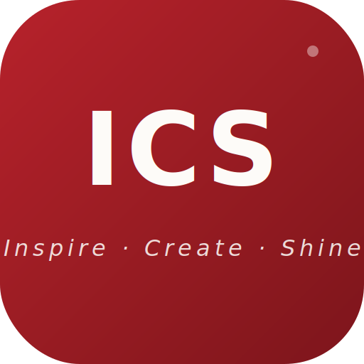
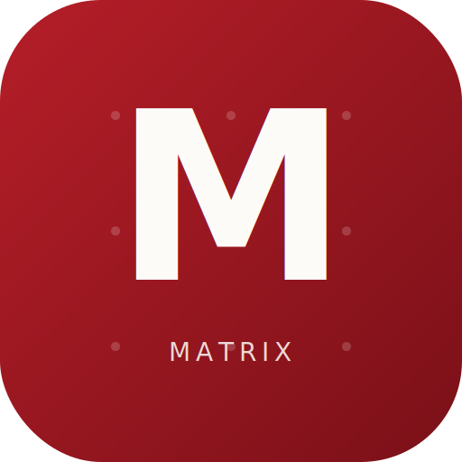
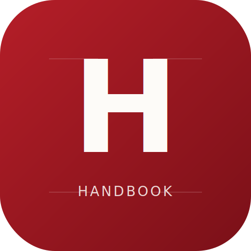
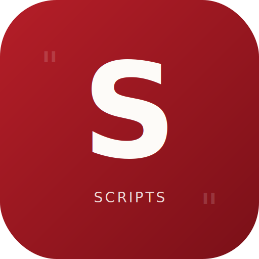

01品牌色系
色票與 handbook「品牌視覺」分頁完全對齊。主色是深玫瑰紅，暖白為底，微咖黑為字。點任一色塊可複製色碼。
💡 為什麼不用純黑？
#2A1A1C 是帶暗紅調的深棕黑，和主色 #A51820 同色調族群。視覺上更溫暖、更一致，整個頁面有一種「微咖帶紅」的質感，這就是 ICS 的獨特氣質。用純黑 #000000 會顯得突兀、冷硬。
✦ 色彩使用原則
- 對外場合（提案、客戶文件、影片字幕）：只用主色系列 + 暖白 + 微咖黑
- 紅色只用在「最重要的一個地方」（CTA、核心標題），其餘大量留白
- 對內場合可用功能色（黃/藍/綠/粉/橙/紫）做分類，但對外不用
- 不要大面積使用亮紅
#C02030，會過於刺眼
- 不要用純黑
#000 代替微咖黑，視覺會突兀
- 不要在印刷品大面積鋪紅色（改用紅線+文字省墨水）
- 不要同時使用超過 3 個主色系以外的顏色
02字體系統
標題用襯線體帶質感，內文用黑體確保易讀。兩款字體都是 Google Fonts 免費可商用。
標題字體 HEADLINE
Inspire · Create · Shine
短影音代理營運 · 讓你的品牌被看見
用於：品牌名、大標題、引言、裝飾字、引言句
Noto Serif TC · 權重 500 / 700 / 900 · 字距 -0.5px
內文字體 BODY
內文就是這個字體
清楚、易讀、適合大量文字。這段話就是用 Noto Sans TC。
用於：正文、說明、按鈕、標籤、表格
Noto Sans TC · 權重 400 / 500 / 700 / 900 · 行高 1.8
✦ 字體載入方式（給工程師/網頁使用）
<link href="https://fonts.googleapis.com/css2?family=Noto+Serif+TC:wght@500;700;900&family=Noto+Sans+TC:wght@400;500;700;900&display=swap" rel="stylesheet">
✦ 字體使用原則
- 標題用襯線（Serif）帶精品感
- 內文用黑體（Sans）確保手機也好讀
- 英文字也用這兩款，中英混排一致
- 印刷品可搭配使用 Playfair Display 英文襯線
- 不要用標楷體、華康系列，缺乏當代感
- 不要用過多字重（建議只用 400 / 700 / 900 三種）
- 不要用雙系統字體（如明體+楷體）混搭
03Icon 系列
深玫瑰紅底 + 白色襯線字母 + 金線裝飾。主 icon 用 ICS，各工具用首字母延伸。未來新工具照此規則繼續延伸（例：Portal = P，Report = R）。

主 Logo
品牌主視覺
未來公司主頁 / 名片 / 提案書

Matrix 選題矩陣
/matrix/
前往網站 →

Handbook 學習手冊
/handbook/
前往網站 →

Scripts 腳本產生器
/script-generator/
前往網站 →
✦ Icon 使用原則
- 底色一律深玫瑰紅漸層（
#B51E28 → #7A1018）
- 字母用 Noto Serif TC 襯線體，白色
#FDFBF8
- 加一條金線裝飾（
#D4A574）增加質感
- 圓角統一 22% 比例（112 / 512）
- 多尺寸備用：32 / 180 / 192 / 512 PNG + SVG
- 不要把底色換成其他顏色
- 不要加卡通插圖、emoji、過多裝飾
- 不要用在 Astra 個人品牌（Astra 用純線條系列）
04標語系統
三層標語，依場合選用。對外提案優先用主標語，精品感場合用副標語，自介時用一句話定位。
主標語 MAIN TAGLINE
Inspire. Create. Shine.
靈感開始於真實，創作屬於你的光芒
用於：所有對外視覺、提案、網站 Hero、名片
副標語 BRAND ESSENCE
Finding beauty. Making it move.
用於：精品感場合、作品集封底、品牌廣告
✦ 一句話定位（對客戶自介用）
-
「我們用一雙發現美的眼睛，幫你的品牌找到那個讓人停下來的瞬間。」
- 適用情境：初次諮詢開場、提案首頁、LinkedIn 簡介
✦ ICS 三字訣（對應服務流程）
- I — Inspire — IP 定位 · 靈感方向
- C — Create — 內容製作 · 有質感執行
- S — Shine — 曝光成效 · 讓品牌發光
05網站資產
所有 ICS 旗下數位資產，使用同一套視覺規範。點擊網址直接前往。
06使用場景指南
不同場合用不同的視覺調性。這份表格是品牌一致性的關鍵。
| 場合 |
主色使用 |
字體 |
語氣 |
| 提案簡報 |
紅色只用標題 + CTA
大量留白 |
標題 Serif
內文 Sans |
專業、有系統 |
| 客戶合約 / 報價單 |
僅使用 Logo 紅
全文微咖黑 |
全部 Sans |
嚴謹、清楚 |
| 社群貼文封面 |
紅色可用於背景
或大字標題 |
Serif 大字 + Sans 副文 |
有溫度、引人停下 |
| IG Reels 字幕 |
字幕白 + 關鍵字紅 |
粗體 Sans |
口語直接 |
| 名片 / 印刷品 |
不鋪紅色，用紅線 + 紅字 |
Serif 名字 + Sans 資訊 |
質感、精品感 |
| Email 簽名 |
只有名字和職稱用紅 |
Sans |
簡潔 |
07應用範例
好的示範 vs 不好的示範，讓外包設計師一看就懂。
範例一：提案簡報封面
✓ 好的示範
暖白底 #FDFBF8 + 左側 Serif 大標題（微咖黑）+ 右下角小 Logo。
紅色只出現在「一句標語」上。大量留白。
✗ 不好的示範
紅色鋪滿整張 + 黃色箭頭 + 閃亮漸層背景 + 標楷體標題。
看起來像 90 年代傳單，不像 2026 顧問公司。
範例二：IG 貼文封面
✓ 好的示範
Serif 大字主標（3-5 字內）+ Sans 副標 + 品牌 Logo 小字。
單純的紅底或暖白底，不加過多裝飾。
✗ 不好的示範
10 行文字塞滿 + emoji 爆炸 + 表情包 + 紫色粉色漸層。
看起來沒有品牌識別度。
範例三：影片字幕
✓ 好的示範
白字黑邊 + 關鍵字用 #A51820 紅色放大。
字體選用黑體粗字（如 Noto Sans 或類似）。
✗ 不好的示範
彩虹字 + 閃爍特效 + 5 種字型混用 + 全黃色底。
影片專業感瞬間歸零。
08雙品牌系統說明
ICS 和 Astra 是兩個不同的品牌軌，視覺並行但共享品牌基因。
🎯 ICS（商業軌）
- 氣質：專業、有系統、可交付
- Icon 風格：實心深紅方塊 + 白字
- 使用場景：客戶提案、商業服務、合約、收費
- 網站資產：Matrix, Handbook, Scripts
- 受眾：客戶、合作夥伴、學員
🌙 Astra（個人軌）
- 氣質：詩意、真實、深度
- Icon 風格：純線條剪影 + 透明底
- 使用場景：日記、靈感紀錄、創作者內容
- 網站資產：Astra 宇宙
- 受眾：粉絲、你自己
✦ 共同血緣（品牌基因）
兩軌都使用 #A51820 深玫瑰紅 + Noto Serif TC 字體。
未來可能整合，現階段雙軌並行。這給品牌同時具備「商業專業」和「個人真實」兩種面向的能力。
09版本紀錄
每次重大更新記錄在這裡。未來外包設計師或合作夥伴看這份，能快速掌握品牌演進。
V3.0 · 2026/04/23
- 色票完整對齊 handbook 品牌視覺分頁（補上邊框色、輔助文字、淡化文字等）
- 所有連結改為可點擊（跳轉到對應網站）
- 色塊支援點擊複製色碼
- 新增「使用場景指南」章節
- 新增「應用範例」好壞示範
- 新增「雙品牌系統說明」（ICS + Astra）
- 新增字體載入 code snippet
- 加入頂部固定導覽列
V1.0 · 2026/04/23 上午
- 建立初版品牌規範
- 確立 Icon 系列（Master / Matrix / Handbook / Scripts）
- Matrix 升級為 PWA（可安裝為手機 App）